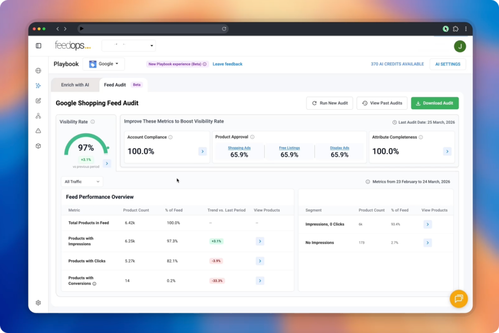

Visibility gaps
Find products that are getting little or no visibility, including products with no impressions and no clicks.
- Products not being seen
- Weak search matching signals
- Catalogue areas with low reach
Free Google Shopping Feed Audit
Free Google Shopping Feed Audit: find what is holding back your Google Shopping feed. Connect Google Merchant Center and get a clear view of product data issues that may be limiting visibility, clicks, and conversions across Shopping, Performance Max, and free listings.

What it checks
The audit helps you see product-level issues at scale instead of relying on spot checks, opinion, or campaign symptoms alone.
Find products that are getting little or no visibility, including products with no impressions and no clicks.
Spot products that receive impressions but do not earn clicks, so you can investigate titles, images, price, relevance, or offer quality.
Review important product data fields that help Google understand, classify, and match your products to relevant searches.
Why run it
Your product feed is a core input for Shopping, Performance Max, free listings, and AI commerce discovery. If the data is vague, incomplete, or hard to match, performance can suffer before your media team has a chance to optimise.
Good fit
The audit is useful whether you manage feeds in-house, work with an agency, or already use another feed platform. It gives you a clearer view of what may be limiting product data performance in Google Shopping.
Get the audit
After you submit the form, FeedOps will send the next steps for your Free Google Shopping Feed Audit setup. To run the audit, we need standard Google Merchant Center access plus reporting and insights permissions for the Merchant Center account you want reviewed.
Once you submit the form, we confirm the business and Merchant Center account you want audited, then guide you through the access step.
If you are an agency, contact us and we can set up an agency login so you can run audits across multiple clients.
Required: standard Google Merchant Center access plus reporting and insights permissions.
This lets FeedOps read the product data and reporting signals needed for the audit, including product visibility, impressions, clicks, and feed health indicators.
The audit does not need Google Ads access and does not make changes to products, pricing, shipping, campaigns, or Merchant Center settings.
Google explains the steps in Manage people and access levels in Merchant Center. For agencies or teams managing multiple client accounts, see Google’s guide to advanced account setup and multi-client accounts.
FAQ
Yes. The Free Google Shopping Feed Audit is free to use. You can sign up with a work email and FeedOps will help set up access.
Yes. Once access is set up, the audit reviews Google Merchant Center product data automatically and surfaces product data issues at scale.
No. You do not need to become a FeedOps customer to use the audit. If you later want help fixing feed issues, that can be discussed separately.
No. You can keep your current feed provider and still use the audit to understand product data issues.
No. The audit uses Google Merchant Center product data and does not require a Google Ads connection.
FeedOps needs standard Google Merchant Center access plus reporting and insights permissions. This lets the audit read product and reporting data needed to assess feed health without changing your product data.
Report permissions allow the audit to read performance signals such as impressions, clicks, visibility gaps, and product-level reporting data. These signals help identify products that may need attention.
No. The audit is read-only. It does not make changes to your Merchant Center account, product data, pricing, shipping, campaigns, or settings.
The audit is for ecommerce teams, retailers, brands, and agencies that want a clearer view of product data health in Google Shopping.
Yes. Agencies can use the audit across multiple client accounts. Contact FeedOps and we can set up an agency login for running audits across multiple clients.
Yes. Retailers and brands can use the audit to understand catalogue health, product visibility, and product data issues across their Merchant Center account.
Yes. You get a login and can rerun audits as often as you need, so you can compare progress over time.
Yes. The audit can be used across multiple websites or Merchant Center accounts when access is set up for each account.
Yes. Relevant team members and stakeholders can be invited so they can review audit results and prioritise fixes.
Yes. The audit workflow is designed so you can review previous results and compare progress over time.
The audit checks signals such as visibility, products with impressions but no clicks, products with no impressions, attribute completeness, and product data gaps that may affect paid Shopping and free listings.
Zombie products are products that receive impressions but do not receive clicks. They may be visible, but they are not attracting enough shopper interest.
No impressions and no clicks means a product is not being seen or clicked. This can point to weak product data, missing attributes, relevance issues, or visibility problems.
Attribute completeness shows whether important product data fields are present and complete. Missing or weak attributes can reduce visibility, relevance, and product matching.
Yes. Feed quality can affect both paid Shopping activity and free listings because both depend on Google understanding product data accurately.
Yes. The audit is designed to help identify weak signals, missing data, low-visibility products, and missed opportunities in your product feed.
No. The audit is designed to be simple to access and easy to understand. FeedOps can guide the setup process.
FeedOps sends setup details, confirms the Merchant Center account you want audited, explains the access needed, and gives you a login so you can review and rerun audits.
Yes. FeedOps may contact you to help set up access or support your use of the audit, but you are not required to upgrade.
No. Using the audit does not commit you to becoming a FeedOps customer or changing your feed setup.
If you want help after reviewing the audit, FeedOps can discuss the right plan, support model, or feed strategy call for fixing the issues.